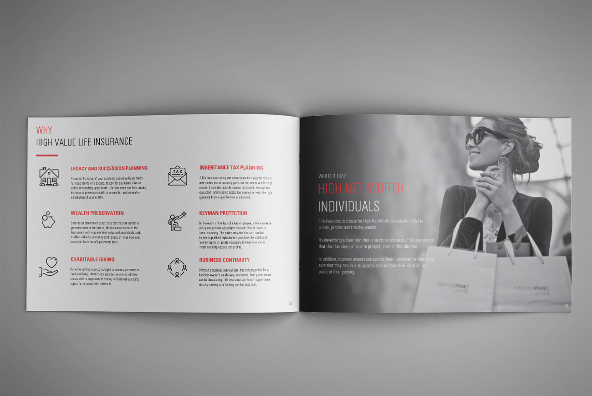

Continental Financial Services
Inbound marketing strategy for life insurance and investment portfolio management
The Continental Group is a leading international insurance brokerage and wealth management firm based in Dubai with services ranging from life, medical, motor, and general insurance to investment portfolio management.
With a business model relying largely on financial advisors and referrals, my challenge as a marketer was to elevate the company's brand and generate inbound leads.
- Client
- Continental Financial Services
- Year
- 2018-20
- Services
-
Marketing strategy and execution
Social media growth
Lead generation
Online motor portal design
Brand tone of voice
Marketing collateral design
User journey mapping
Content creation
Hard facts
- The firm had an outdated website that needed to be revamped and updated on priorty.
- A complete 360 marketing plan needed to be created and KPIs established to track progress.
- The marketing team did not have a content strategy in place, both on-page and off-page SEO needed a lot of work, and SEM campaigns needed to be launched in order to compete with regional competitors.
- With the company celebrating its 25th anniversary, the marketing team needed to plan on-going employer branding initiatives.
The challenge
- A key challenge was to extract critical information from key internal stakeholders to define what the brand stood for, what its USPs were, establish a tone of voice, and set course for future campaigns.
- To establish a strong digital footprint, we needed to set up a content framework and pipeline to address the hot button issues our target prospects were seeking expertise for.
- The marketing strategy needed to effectively balance digital with traditional channels including regular investment seminars and on-going face-to-face presentations by financial advisors.
Results
- The marketing strategy focused heavily on Google Search and Display ads, with a bidding strategy aimed at staying ahead of our competition for specific keywords. This alone established an daily influx of leads with an average CPC of $1.5 and a landing page conversion rate of 5.82%, both considerably better than the industry average.
- Created proprietary content in the form of blogs, whitepapers, expert interviews, and podcasts that ramped up social media activity and following.
- Launched a bi-monthly newsletter that had an average open rate of 24% and click thru rate of 1.5%.
- Reduced the marketing budget by 26.9% while achieving sales growth of 13%.
- Formulated a sponsorship strategy that led to a 25% increase in sponsorship funding for annual events.
-
139%
increase in website traffic in 6 months -
311%
percent increase in Facebook followers in 6 months -
20.5%
annual organic growth in LinkedIn followers -
$500k
new Assets Under Management (AUM) acquired
-
- 

next project